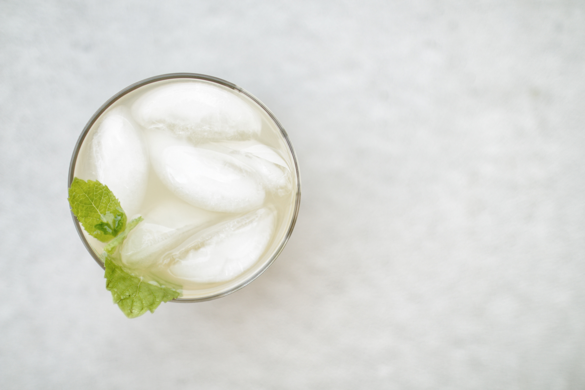

Margarita

Photo by Brianna Santellan on Unsplash
Description
What is better than a refreshing margarita on a hot summer day? This version skips the mixes and delivers freshness with fresh squeeze lemon and lime juice. The extra effort comes out in the taste, so don't skip it!
This recipe was adapted from my mom. Love you mom!
Ingredients:
- 1/2 cup Lime Juice
- 1/2 cup Lemon Juice
- 1 cup tequila
- 1 cup Grand Marnier
- 1/4 to 1/2 cup sugar (depending on how sweet you like it
- 5 cups of ice
To Prepare:
- Combine all the ingredients minus the ice into a mason jar. Refrigerate until needed, shaking a few times to disolve the sugar
- Add the mixture and the ice into a blender
- Blend until smooth